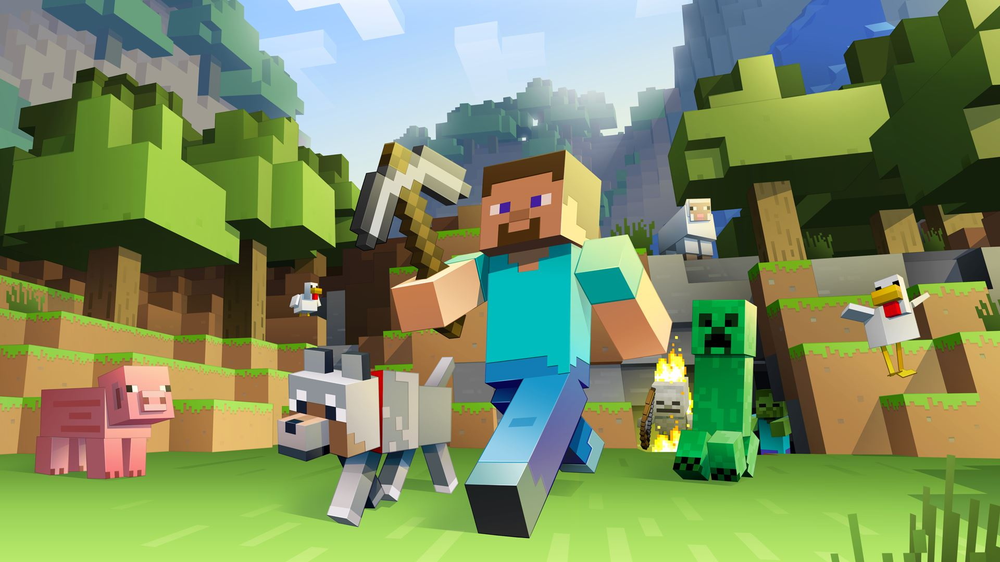
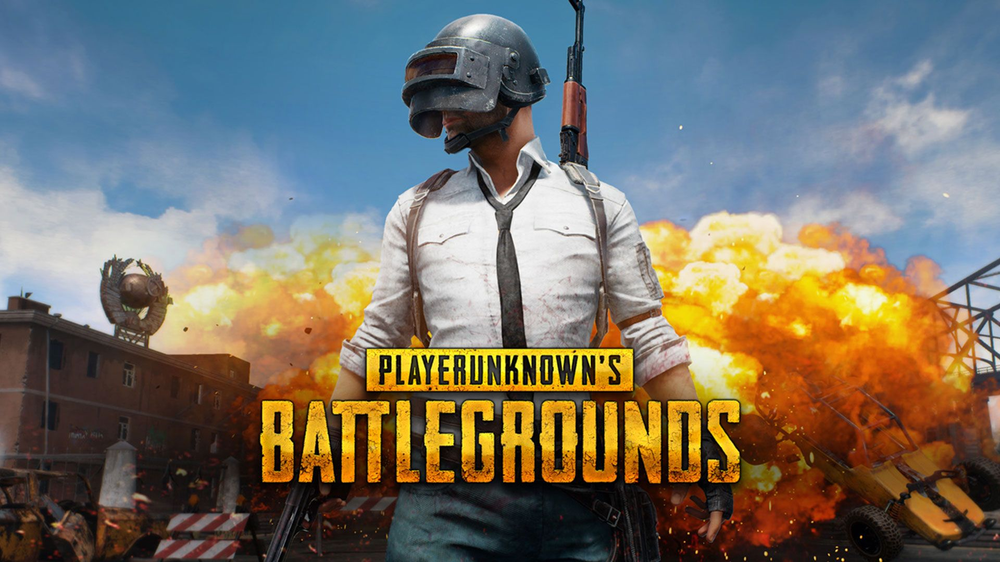
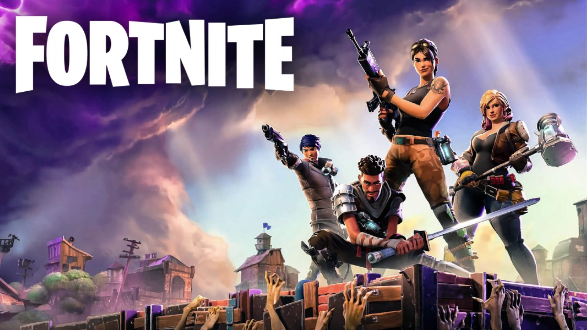
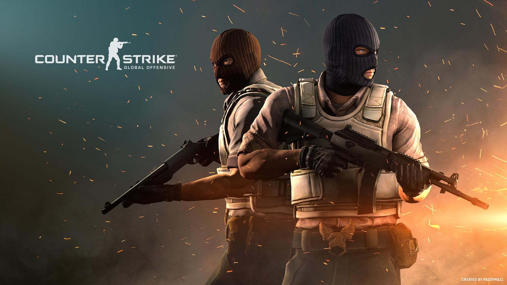
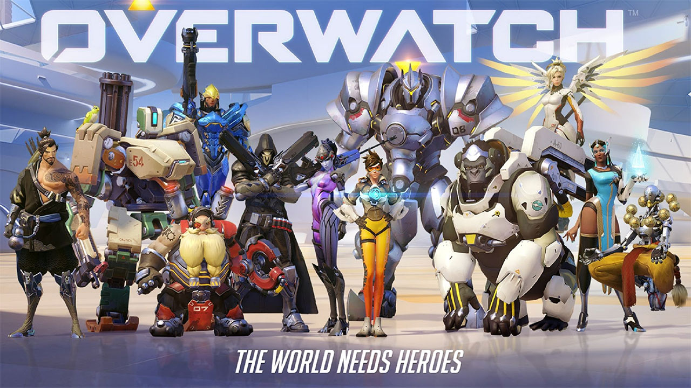

Minecraft
Minecraft ist ein Open-World-Spiel, dass vom schwedischen Programmierer Markus „Notch“ Persson erschaffen und von dessen Firma Mojang veröffentlicht wurde und bis heute weiterentwickelt wird. Das Spiel erschien erstmals am 17. Mai 2009 für PC, war damals jedoch noch in der Entwicklungsphase, welche die Alpha- und Beta-, sowie noch einige andere Versionen umfasste Mojang veröffentlichte zusätzliche Versionen für iOS, Android und den Raspberry Pi. Minecraft wurde auf allen Plattformen in Summe über 200 Millionen Mal verkauft und ist somit das meistverkaufteste Videospiel weltweit. In dem Videospiel kann der Spieler Konstruktionen aus zumeist würfelförmigen Blöcken in einer 3D-Welt bauen. Außerdem kann der Spieler diese Welt erkunden, Ressourcen sammeln, gegen Monster kämpfen und die Blöcke zu anderen Gegenständen weiterverarbeiten.

PubG
PlayerUnknown’s Battlegrounds (kurz auch oft PUBG) ist ein Mehrspieler-Shooter, der vom Bluehole-Studio PUBG Corporation entwickelt und vertrieben wird. Der Spieler landet mit einem Fallschirm von einem Flugzeug aus auf einer abgelegenen Insel. Dort muss er versuchen, möglichst lange zu überleben. Eine kreisförmige Begrenzung wird in bestimmten Zeitintervallen kleiner und sorgt für Schaden bei Spielern, falls sie sich noch nicht innerhalb des sicheren Bereiches befinden. Dadurch werden die Spieler auf einen zufälligen Punkt in der Karte gelenkt. Zuvor wird die bevorstehende Verkleinerung bereits an einer Markierung auf der Minimap angezeigt. Das Spiel ist auf den Mehrspielermodus begrenzt. Alleine oder als Zweier- oder Vierer-Team kämpft man gegen bis zu 100 weitere Spieler. Dabei stehen einem unterschiedliche Waffen, Fahrzeuge, Kleidung und sonstige Ausrüstungsgegenstände, die man in der Spielwelt finden kann, zur Verfügung.

Fortnite
In diesem kostenlosen Modus (Free-to-play) treten bis zu 100 Spieler entweder alleine oder in Teams von bis zu vier Spielern gegeneinander an. Der letzte Überlebende, beziehungsweise das letzte überlebende Team, gewinnt. Zu Beginn einer Runde springen alle Spieler über derselben Karte ab und sind nur mit einer Spitzhacke ausgerüstet, mit der sie die Baumaterialien Holz, Stein und Metall abbauen können und Spielern pro Schlag 20 (vormals 10) Lebenspunkte abziehen können. Mit den so gesammelten Materialien können Wände, Treppen und andere Gebäudeteile errichtet werden, die Schutz vor den Gegnern und deren Schüssen bieten, oder benutzt werden können, um Hindernisse zu umgehen. Waffen und andere nützliche Gegenstände sind auf der Karte verteilt und können vom Spieler aufgehoben werden. Es gibt dabei sechs Klassen von Waffen, die Gegnern unterschiedlich viel Schaden hinzufügen und unterschiedlich schnell nachgeladen werden können: gewöhnlich (grau), ungewöhnlich (grün), selten (blau), episch (violett), legendär (orange) und mythisch (gold).[11] Eine größere Anzahl an Gegenständen ist in Vorratslieferungen, sogenannten Lootdrops, die in geringer Anzahl vom Himmel fallen, enthalten.

CSGO
Counter-Strike: Global Offensive (kurz CS:GO) ist ein Computerspiel aus dem Genre der Online-Taktik-Shooter. Wie in Counter-Strike-Spielen üblich, wird ein Gefecht auf einem begrenzten Spielfeld (Map) zwischen zwei Gruppen, Terroristen (Terrorists, kurz: T) und einer Antiterroreinheit (Counter-Terrorists, kurz: CT), mit Waffen und taktischen Ausrüstungen (zum Beispiel Schutzwesten) ausgetragen. Die Art des Gefechtes variiert je nach Spielmodus. Der Spieler hat die Möglichkeit online auf offiziellen Servern oder auf von der Steam-Community erstellten Servern zu spielen. Zudem kann der Spieler auch selbst einen Server hosten, auf welchem er alleine, privat mit anderen Spielern und/oder mit Bots spielen kann.

Overwatch
Beschreibung: Overwatch ist ein Mehrspieler-Ego-Shooter des US-amerikanischen Spielentwicklers Blizzard Entertainment. In Overwatch treten zwei Teams zu je sechs Spielern gegeneinander an. Beide Teams kämpfen dabei innerhalb einer vorgegebenen Zeitspanne um die Kontrolle über einen vorgegebenen Standort oder eskortieren eine Fracht auf dem Spielfeld. Jeder Teilnehmer wählt zuvor einen aus 31 vordefinierten Helden aus den drei Kategorien Schaden, Tank und Unterstützer, den er in der aktuellen Runde spielt, aber auch noch während der laufenden Runde, innerhalb einer Kategorie wechseln kann. Nach dem Beenden einer Runde werden Erfahrungspunkte und die Möglichkeit für äußerliche Veränderungen der Helden vergeben, die sich jedoch nicht auf die Fähigkeiten und damit auch nicht auf den Spielablauf auswirken.